How it works
Five plain-language diagrams, from the widest view down to the smallest part. They show what actually ships today: which piece is for you, what happens in a patient's session, a physician's daily loop, what goes on inside the multi-AI panel, and why there is no center to the whole thing.
Not one AI. A panel that has to agree.
An ordinary health chatbot is one AI answering alone, and whatever it gets wrong goes straight to the person asking. This tool works differently: every copy runs a panel of two or more different AIs — you choose which, for example OpenAI's ChatGPT, Google's Gemini, and DeepSeek. The same symptom answers go to each one separately, and here is what the panel does with them.
- The same symptom answers go to each AI separately.
- They have to agree before you are shown anything.
- When they disagree in a way that matters, it tells you — it never hides one AI's confident guess.
- If any single AI flags a warning sign, that warning is kept.
- If too few of them answer properly, it refuses to answer rather than falling back to just one.
This cross-check is the tool's stand-in for a second and third opinion, and it is built in: no copy runs with fewer than two AIs. The diagrams below show where that panel sits in the whole system.
1. Which piece is for you
This project is one system only to the people who built it. To everyone else it is five separate tools: you pick the row that describes you, install only that piece, and follow only that piece's instructions. There is no engine service and nothing shared while it runs. The shared core is a code library that every download carries its own copy of inside itself, the way two clinics might use the same textbook — same content, separate books.

2. A patient's journey through the bot
This is what a session looks like for a family using the Telegram helper: a clear not-a-doctor warning first, a few structured questions, a local privacy filter that strips personal identifiers before anything leaves your computer, the multi-AI panel, and a plain-language result.

3. A physician's daily loop
The physician version reads a doctor's own inbox and drafts replies, referrals, and faxes using the same panel. Nothing is ever sent automatically: the physician approves, edits, or dismisses every card and remains the author of record, the same relationship as with a scribe or dictation service.
![A flow of a physician's daily loop: unread patient messages in the Spruce inbox; the physician's own assistant session drafts a reply using the multi-AI panel; a review card shows what the patient said, the panel recommendation, numbered plan options, and a pre-drafted reply; the physician decides — approve, edit then approve, dismiss, or handle it themselves — with nothing sent without them; on approval it can send the reply, generate a referral or form PDF, and fax via the physician's own account, then mark it sent and move to the next card.](diagrams/physician-loop.svg)
4. Inside the multi-AI panel
This is the committee up close. One structured case goes to each model separately; every answer is parsed and checked on its own. If too few answer properly the panel fails hard rather than quietly downgrading to a single model. Warning signs are kept by union — one model raising a flag is enough — and material disagreement is surfaced, not resolved by picking a favorite.
![A detailed flow inside the panel: one schema-validated case goes to several models such as Anthropic, DeepSeek, and a local Ollama model; each answer is parsed and schema-checked independently; if fewer than the required number answer properly the panel throws a hard failure instead of falling back to one model; otherwise the answers are merged with considerations clustered and next steps deduplicated; red flags are kept by a safety-first union where one flag is enough; and any material disagreement sets a divergence flag that is surfaced to the user with the most cautious summary chosen.](diagrams/ai-panel.svg)
5. The deployment topology
Finally, the whole picture: many independent nodes and no center. Each deployment stands alone and keeps working regardless of what happens to any other — including this project's original host. The code is permissively licensed and downloadable as self-contained archives, so any node can seed new ones, and nearby nodes can work together using the same card formats and portable summaries.

Start your own
Pick who you are and follow only that page. Find your starting point →